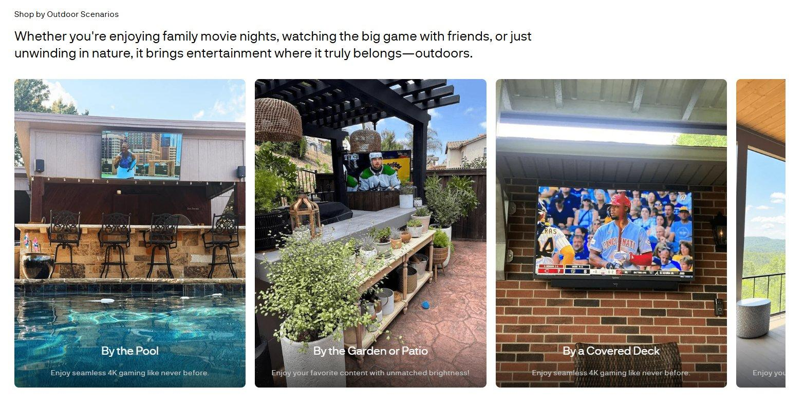
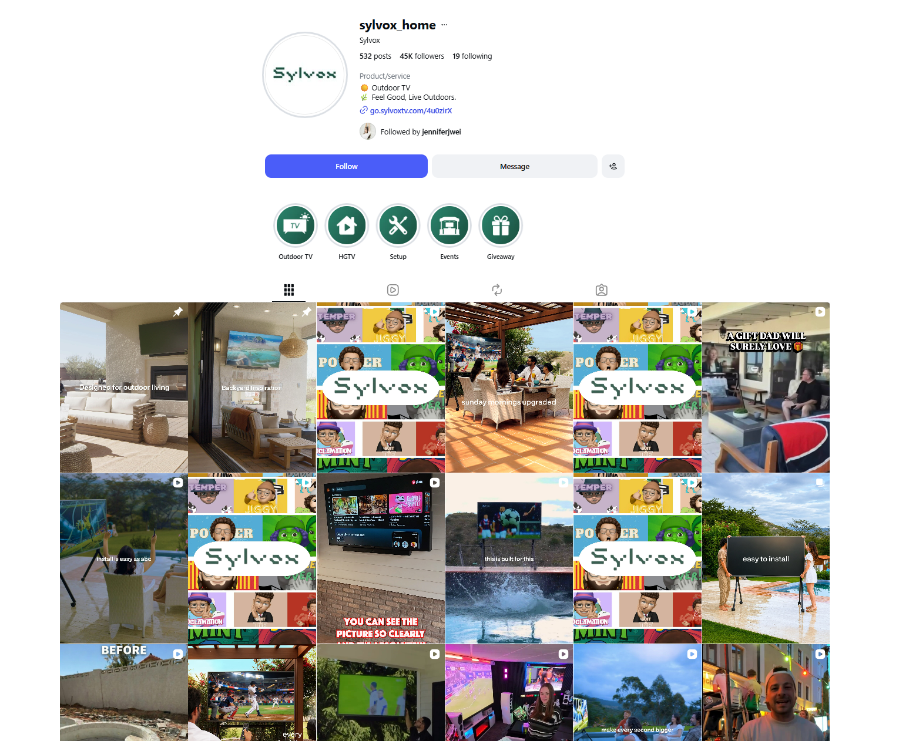

The Foundational Study Behind a TV Brand's U.S. Repositioning
19 voices, 416 validations — from an ambiguous five-category brief to an adopted brand positioning.
Overview
Background
Three years in, Sylvox was the #2 outdoor-TV brand online in the U.S. — behind Samsung. But it had a brand vacuum: no brand meaning, no product definition, just spec sheets. People who knew the name couldn't say what it stood for, and the company wanted to move past spec comparison toward one emotional story.
The trigger: retail expansion was on the table. On a shelf there's no product page to explain specs — brand meaning is conversion. A positioning chosen now would constrain years of product, channel, and messaging spend. The decision was strategic and near-irreversible — and the company had never studied its U.S. users. That's when foundational research earns its place.
Questions
Business question: Where should Sylvox focus, how should it position, and whom should it target to grow in the U.S. — before entering retail?
Where to play was resolved in discovery: stakeholder interviews plus desk research set the focus on the outdoor line, not the other four categories. The study then answered:
- RQ1 — Whom to win: who are outdoor TV's real users — needs, personas, purchase journey? (qual frameworks → quant validation)
- RQ2 — How to win: which brand territory wins with both current and potential buyers, and where's the edge vs. Samsung? (qual concept screen → quant validation + brand comparison)
Design
A two-stage qual → quant funnel: discovery and screening run open in qual; convergence and priority in quant. I chose focus groups over IDIs — early persona work needs group-level contrast, not depth on outliers. Concepts were screened in qual before quant, so survey budget never measured a mediocre idea.
- 1 · Discovery
Stakeholder interviews + desk research — align questions, generate hypotheses, set focus = outdoor TV - 2 · Qualitative
3 focus groups (N=19) — validate demand, build persona & journey frameworks, screen + regenerate concepts - 3 · Quantitative
Survey (N=416) — validate personas / behavior / journey + concept validation
The qualitative frameworks became the quantitative measurement model: the persona (6 dimensions: life stage, interests, home environment, spending values, brand attitudes, media habits) and the journey (6 stages: need emerges → awareness → search & compare → consideration → purchase → install & use) were transcribed directly into the survey architecture. Qual produced not just insight but the measurement model.
Sampling
| Group | n | Profile |
|---|---|---|
| Young owners | 6 | Outdoor-TV owners, under 40 |
| Mature owners | 6 | Outdoor-TV owners, 40+ |
| Potential users | 7 | No outdoor TV; outdoor-lifestyle, decision-maker |
Quantitative — N=416: 296 owners (Samsung Terrace 228 · other brands 68, incl. Sylvox 26) + 120 potential users — screened for HHI $80k+, single-family/townhouse, purchase decision-maker. The analytic lens throughout: Samsung Terrace vs. other brands vs. potential users.
Decisions
As the company's first research project, executives pushed hard: "How much revenue will this drive?" and "Why not just talk to shoppers at Home Depot?" I reframed value as de-risking the positioning decision + unifying cross-team language, anchored on trackable downstream signals instead of promising revenue.
- Scope — don't fight on five fronts.The brief spanned 5 categories with a 700–1,000-sample ask, but niche cells had near-zero incidence. My decision: narrow into one focused N≈415 study on the core outdoor line. Power on the core line beats a shallow pass at five.
- Concepts — generate, don't just grade.The client's two existing concepts were generic and abstract. I didn't quantify them — I regenerated three territories from qual insight, then validated. A concept test placed mid-study generated the position rather than merely grading it.
- Stakeholder ROI.Three scattered asks converged into the three strategic bets: where to play, how to win, whom to win.
Fieldwork
I moderated three 90-minute online focus groups with live Otter transcription. Owner groups opened on use-scene recall and walked the journey framework; the potential group opened on a real behavior — "have you ever carried an indoor TV outside?"
Thematic analysis — open coding of transcripts clustered into themes along the persona dimensions and journey stages:
| What participants said | Theme |
|---|---|
| "my sanctuary" · "get away" · "rewarding" | Destress & reward ("me-time") |
| "hotspot to chill" · "brings everyone" · "game day" | Backyard as social hotspot |
| "assume waterproof" · "don't research specs" · "all the same" | Specs are table-stakes, not sells |
Concept-reading discipline: overall liking clustered at the scale ceiling, so conclusions drew on dimension-level significance, feature preferences, and open-ends — not overall scores.
Findings
Owners: 70% male, median age 38 (67% are 31–45), bachelor+, IT-heavy, median HHI $150k. Potential users skew older, more female, lower income. 89% of owners had carried an indoor TV outside before buying (over half, 5+ times a year) — demand proven by behavior, not concept. The backyard is a semi-private space: "the hotspot where people could chill… it brings entertainment to the area."
The purchase path (Step 0–5): need emerges → awareness (Google › YouTube) → search & compare → consideration (picture · waterproof · sound) → purchase (66% online; Amazon/BestBuy) → install (60% self-install).
We first defined potential users as "outdoor lovers." But the real enthusiasts — golf, fishing, hiking, skiing, "looking around at the trees and animals" — believe you should watch less TV and get moving outside. The people who respond are relaxed-outdoors TV-lovers — the classic couch-potato / sports fan. Moving the TV outside reframes the habit as healthier: sun, a little "contact with nature," and less couch-potato guilt.
Destress (55%) was the #1 shared attitude — wellness is the only emotional territory covering both current and potential buyers. The client's 2 concepts failed ("that's what you expect… nothing out there"); 3 territories regenerated from qual insight; Concepts A & C ranked highest → the winning territory: "Outdoor Viewing, Healthy Living" → "Feel Good, Live Outdoors."
Impact
The deliverable wasn't a report — it was five adopted decisions:
- Outdoor is the focus line— where to play; other categories demoted to listing coverage.
- "Feel Good, Live Outdoors"— how to win; positioning developed from the winning territory, now live on Instagram.
- Value-led route around Samsung— how to win; full-function + value, not a brand war; All-Weather as lead claim.
- Trust-first site rebuild— whom to win; Sylvox Care warranty + press endorsements up front; shop-by-outdoor-scenario layout.
- Media & channel priorities— whom to win; persona-targeted Amazon ads (~10% CTR lift, first month); Texas gap + BestBuy weight flagged.


A part-time, 16-week study set the brand's product, positioning, competitive, and channel direction at once.
Reflection
- Concept discrimination.Sequential concept exposure on online panels biases scores upward and ceilings them. I leaned on dimension-level diffs and open-ends — with budget I'd use monadic design or MaxDiff.
- Own-brand base.Even with the client list deployed, Sylvox-owner reach fell short (26 of 416), so brand-specific reads are directional. Next time: targeted incentives, a dedicated owner study, or a tracking wave.
- Recruitment coverage.Sales staff flagged older/retired shoppers browsing in stores; online panels under-cover them. I'd add in-store intercepts or retail-partner recruiting.
- Impact tracking.CTR is the fastest downstream signal, but positioning success needs brand-health tracking (awareness, association, consideration). I recommended an annual baseline.